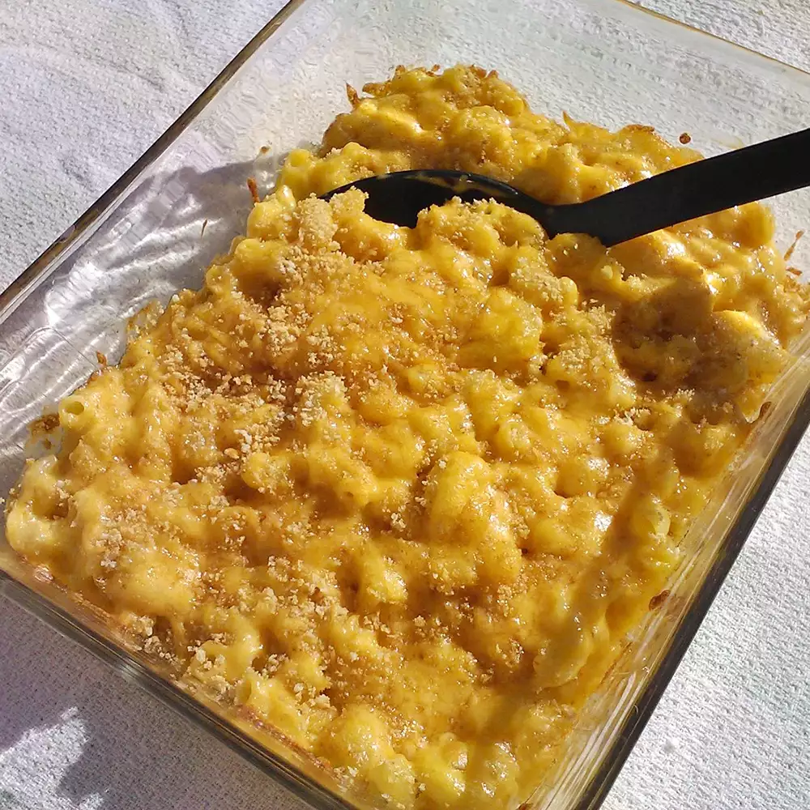

Mac and Cheese

Description
Old school down to earth macaroni and cheese. This recipe makes a lot
of food so you can save some for later.
Ingredients
- 1 and 3/4 lb whole-wheat macaroni
- 3/4 cup butter
- 3/4 cup all-purpose flour
- 6 cups milk
- 1 tablespoon Worcestershire sauce
- 1 teaspoon mustard powder
- 1 teaspoon onion powder
- 1 teaspoon cayenne pepper
- Salt and pepper to taste
- 1 (8oz) package shredded cheddar cheese
- 3 (8oz) packages shredded American cheese
- 1 (8oz) bag potato chips, crushed
- 1 cup shredded Cheddar cheese
- 1/3 cup grated Parmesan cheese
- butter flavored cooking spray
Directions
- Preheat oven to 375 degrees F
- Bring large pot of lightly salted water to a boil. Cook elbow macaroni
in the boiling water, stirring occasionally unitl cooked through but firm
to the bite. Drain.
- Melt butter in large pot over medium-low heat. Slowly add flour to butter,
whisking constantly; cook until brown and the mixture no longer smells of flour.
Pour 1 cup milk into the flour mixture, whisking continually until fully incorporated.
Repeat this twice. Add remaining 3 cups milk to the mixture, whisking to
incorporate. Stir in Worcestershiresauce, mustard powder, onion powder, and cayenne
pepper into the mixture. Season with salt and pepper to taste.
- Reduce heat to low. Cook sauce, whisking frequently, until it begins to thicken.
Add about half the package of shredded Cheddar cheese; stir continually until the
cheese melts completely. Repeat with the remaining half package of Cheddar cheese
and the American cheese, about 4 ounces at at time. Once cheese is entirely incorporated
, remove sauce from heat.
- Stir drained macaroni into the cheese sauce to coat. Divide macaroni between two
9x13 inch baking dishes.
- Mix crushed potato chips, 1 cup shredded Cheddar cheese, and Parmesan cheese
in a bowl. Top the Macaroni with the potato chip mixture evenly. Spray the
potato chip mixture with cooking spray.
- Bake in preheated oven until the crust is golden brown and the sauce is bubbling.